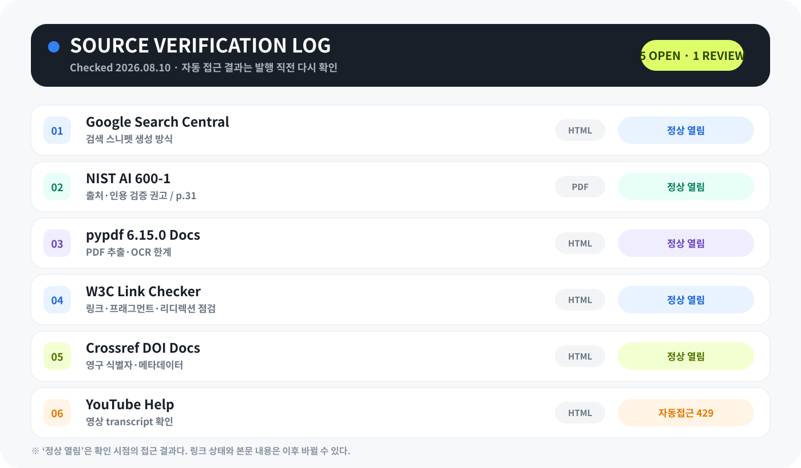

요약끼리 서로를 확인한다
검색 설명과 AI 답변이 같은 원문을 짧게 재가공한 것인데도 독립된 두 근거처럼 보일 수 있습니다.
AI에게 조사를 시키면 웹, PDF, 영상, 대화 자료가 정말 빨리 모입니다. 그런데 결과가 그럴듯할수록 마지막에 꼭 하는 일이 있습니다. 링크를 직접 열고 원문까지 내려가는 것입니다.

검색 설명과 AI 답변이 같은 원문을 짧게 재가공한 것인데도 독립된 두 근거처럼 보일 수 있습니다.
숫자는 단위와 기간, 인용문은 발화자와 페이지·타임스탬프, 링크는 확인일과 상태를 남깁니다.
독자가 다시 열어 볼 수 없는 문장은 최종 보고서의 핵심 근거로 쓰지 않습니다.
나는 AI를 조사 시작점으로 적극적으로 씁니다. 안 되는 건 없다고 생각하고, 먼저 AI에게 자료를 모으게 합니다. 하지만 마지막 검수는 꼭 사용자가 해야 합니다. 특히 출처는 더 그렇습니다.
검색 결과의 두세 줄 설명은 원문 미리보기이고, PDF 추출문은 도구가 복원한 텍스트이며, 영상 transcript는 자막 데이터입니다. 셋 다 편리하지만 원자료와 같은 것은 아닙니다.
자료 후보를 넓게 찾는 단계
주장을 실제로 지지하는지 확인
페이지·섹션·타임스탬프 기록
나중에 다시 열 수 있게 남김
어디를 볼지 빠르게 알려줍니다. 하지만 지도에 적힌 길 이름이 맞는지, 실제 길이 열려 있는지는 현장에서 다시 봐야 합니다.
공식 문서, 원 논문, PDF, 영상의 실제 발화 지점처럼 독자가 다시 확인할 수 있는 자료가 마지막 근거가 됩니다.
무엇을 언제 확인했고 어떤 주의사항이 있었는지 남겨두면, 업데이트할 때 처음부터 조사하지 않아도 됩니다.
검색 화면에 보이는 두세 줄이 틀렸다는 뜻은 아닙니다. 문제는 그 문장이 어떤 검색어를 기준으로 잘렸고, 무엇이 생략됐는지 알기 어렵다는 점입니다.
예전에는 검색 결과에 보이는 설명과 AI 요약이 비슷하면, 두 번 확인된 것처럼 느껴질 때가 있었습니다.
그런데 생각해보면 둘 다 같은 원문을 짧게 잘라 보여준 것일 수 있습니다. 검색 설명을 AI가 읽고 다시 요약했다면 사실상 한 자료를 두 번 본 것입니다. 근거가 두 개가 된 게 아닙니다.
Google도 검색 스니펫이 페이지 내용에서 자동 생성되고, 사용자의 검색어에 따라 서로 다른 문장이 표시될 수 있다고 설명합니다. 검색 설명은 원문을 대신하는 고정 초록이 아니라, 검색 상황에 맞춘 미리보기입니다. [출처 2]
읽기 쉽고 빠릅니다. 대신 조건과 예외가 잘려 나갈 수 있습니다.
조금 느리지만 최종 판단에 필요한 맥락이 남습니다.
AI가 가져온 링크 목록을 그대로 참고문헌으로 쓰지 않습니다. 먼저 자료의 역할을 나누면, 무엇을 근거로 쓰고 무엇을 탐색용으로만 둘지 선명해집니다.
정부 문서, 회사 공식 문서, 법령, 공시, 원 논문, 데이터셋처럼 주장에 가장 가까운 자료입니다.
PDF, GitHub 저장소, 영상 원본, 회의록, transcript, 릴리스 노트처럼 실제 재료가 남는 자료입니다.
공식 자료로 확인하기 어려운 사건·협상·시장 반응은 신뢰도 높은 보도로 보완합니다.
후보 자료를 찾고 질문을 넓히는 데 씁니다. 최종 숫자와 인용의 근거로는 바로 사용하지 않습니다.
논문이라면 가능하면 제목만 검색하지 않고 DOI까지 남깁니다. Crossref는 DOI가 웹사이트가 바뀌어도 같은 연구물을 가리키는 영구 식별자로 유지되도록 메타데이터를 관리한다고 설명합니다. [출처 5]
웹 본문 추출이 비었거나 PDF 표가 깨졌을 때, AI에게 “다시 해봐”만 시키면 같은 오류가 반복될 수 있습니다. 도구를 바꾸는 게 아니라 입력 형태를 바꾸는 것이 핵심입니다.
자동 추출문과 브라우저에 보이는 제목·본문·업데이트일을 대조합니다.
페이지별 추출 결과에서 숫자와 문장을 찾되, 표·각주가 섞였는지 봅니다.
텍스트 순서가 이상하면 해당 페이지를 이미지로 열어 눈으로 확인합니다.
스캔 PDF처럼 페이지 전체가 이미지일 때만 OCR을 보조 수단으로 씁니다.
transcript에서 찾은 문장을 실제 타임스탬프로 이동해 앞뒤 맥락을 듣습니다.
PDF는 화면에 잘 보인다고 해서 기계가 같은 구조로 읽는 파일이 아닙니다. pypdf 문서는 스캔 페이지가 이미지로만 구성되면 추출 텍스트가 거의 없을 수 있고, 표·문단·각주를 확실하게 구분하는 의미 구조가 PDF에 없을 수 있다고 설명합니다. [출처 3]
그래서 나는 추출 결과를 원문이라고 부르지 않습니다. 추출 결과는 원문을 읽기 쉽게 바꾼 중간 산출물입니다. 숫자 하나가 중요하면 결국 해당 페이지 화면으로 돌아갑니다.
AI가 숫자를 정확히 옮겼어도 단위와 기간이 빠지면 다른 의미가 됩니다. 인용문도 문장 자체가 같아도 발화자와 맥락이 바뀌면 해석이 달라집니다.
| AI 요약 문장 | 원문에서 다시 볼 것 | 최종 작성 방식 | 주의 |
|---|---|---|---|
| “비용이 30% 감소했다” | 어느 기간, 어느 지역, 무엇 대비 30%인지 | “회사 내부 시범 환경에서 전월 대비 30% 감소했다고 회사가 설명” | 이 표의 숫자는 검증 방법을 보여주기 위한 예시 |
| “CEO가 곧 출시한다고 말했다” | 정확한 발언, 행사 날짜, ‘곧’의 범위 | 영상 12:44의 원문과 발표일을 함께 기록 | 자막 자동 인식 오류 가능 |
| “공식 문서가 상업 이용을 허용한다” | 라이선스 본문, 규모·지역·표시 의무 | 허용 범위와 예외 조건을 분리해 작성 | 무료·오픈웨이트·오픈소스는 다른 개념 |
출처는 영원히 같은 위치에 있지 않습니다. 페이지가 이동하고, 문서가 업데이트되고, 자동 접근이 막히기도 합니다. 그래서 URL만 저장하는 것보다 확인 당시의 상태를 함께 남깁니다.

W3C의 Link Checker 문서는 링크와 내부 프래그먼트가 실제로 열리는지 확인하고 리디렉션을 경고하는 방식을 설명합니다. 링크 검사는 단순히 404만 찾는 작업이 아니라, 이동된 주소와 깨진 섹션 링크를 발견하는 작업이기도 합니다. [출처 4]
다만 링크가 열린다고 내용이 맞는 것은 아닙니다. 접근 상태 확인은 1차 점검이고, 그 페이지가 내 문장을 실제로 지지하는지는 사람이 다시 읽어야 합니다.
| 원자료 | 역할 | 확인 위치 | 확인일 | 링크 상태 | 주의사항 |
|---|---|---|---|---|---|
| NIST AI 600-1 | AI 출력의 출처·인용 검증 권고 | 인쇄면 p.31, MS-2.5-003 | 2026.08.10 | 정상 열림 · PDF | 위험관리 권고 문서 |
| Google Search Central | 검색 스니펫 생성 방식 | How snippets are created | 2026.08.10 | 정상 열림 · HTML | Google 검색에 한정 |
| pypdf Docs | PDF 추출·OCR 한계 | Why Text Extraction is hard | 2026.08.10 | 정상 열림 · HTML | 도구 범위 문서 |
| W3C Link Checker | 링크·리디렉션 점검 | What it does | 2026.08.10 | 정상 열림 · HTML | 문서 자체는 오래됨 |
| Crossref Docs | DOI·영구 식별자 | Benefits of registration | 2026.08.10 | 정상 열림 · HTML | 모든 자료에 DOI가 있는 것은 아님 |
| YouTube Help | 영상 transcript 확인 | View video transcripts | 2026.08.10 | 자동접근 429 | 일반 브라우저 재확인 필요 |
모든 링크를 처음부터 완벽하게 읽는 방식은 오래 못 갑니다. AI에게 넓게 찾게 하고, 핵심 주장만 원문으로 좁혀 검증하는 흐름이 현실적이었습니다.
claim: "AI 출력의 출처와 인용은 검증해야 한다" source_url: "https://doi.org/10.6028/NIST.AI.600-1" location: "인쇄면 p.31 · MS-2.5-003" checked_at: "2026-08-10" link_status: "정상 열림 · PDF 64쪽" caution: "권고 문서이며 법적 의무로 확대 해석하지 않음"
링크 접근, 중복 URL, 날짜 형식, 인용 위치 누락은 자동화하기 좋습니다. 반면 회사 주장과 독립 사실을 구분하고, 인용문이 맥락을 왜곡하는지 판단하는 일은 사람이 맡아야 합니다.
열림·리디렉션·404·429를 주기적으로 점검합니다.
같은 URL 중복, 확인일 누락, 페이지 위치 빈칸을 찾습니다.
문서 제목·업데이트일·해시가 바뀌었는지 표시합니다.
출처가 내 주장을 실제로 지지하는지 읽고 판단합니다.
민감정보, 과장, 오해 가능성, 최종 결론을 검수합니다.
원문 확인이 중요하다고 해서 조사 속도를 다시 사람 손 수준으로 되돌릴 필요는 없습니다. 핵심은 리스크 기반 검증입니다.
검색·AI 요약으로 빠르게 구조를 만들고, 공개 전 핵심 주장만 확인합니다.
숫자·제품명·날짜·정책·직접 인용은 원문 링크와 위치를 남깁니다.
공식 원문과 독립된 보조 근거를 교차 확인하고 전문가 검토를 거칩니다.
출처 중심 조사는 강력하지만, 원문 자체의 편향과 업데이트 가능성까지 같이 봐야 합니다.
공식 자료는 가장 가까운 원출처일 수 있지만 회사의 주장·마케팅·자체 벤치마크일 수 있습니다.
대응“회사 측 결과”라고 표시하고 가능하면 독립 평가를 붙입니다.
페이지가 정상 열려도 해당 문장이 없거나, 다른 조건의 수치일 수 있습니다.
대응페이지·섹션·표·타임스탬프까지 기록합니다.
표의 열 순서, 각주, 스캔 OCR, 특수문자가 깨질 수 있습니다.
대응중요 숫자는 렌더링된 페이지와 대조합니다.
가격·제품명·정책·라이선스·도움말은 바뀔 수 있습니다.
대응확인일과 버전을 남기고 발행·업데이트 직전에 다시 엽니다.